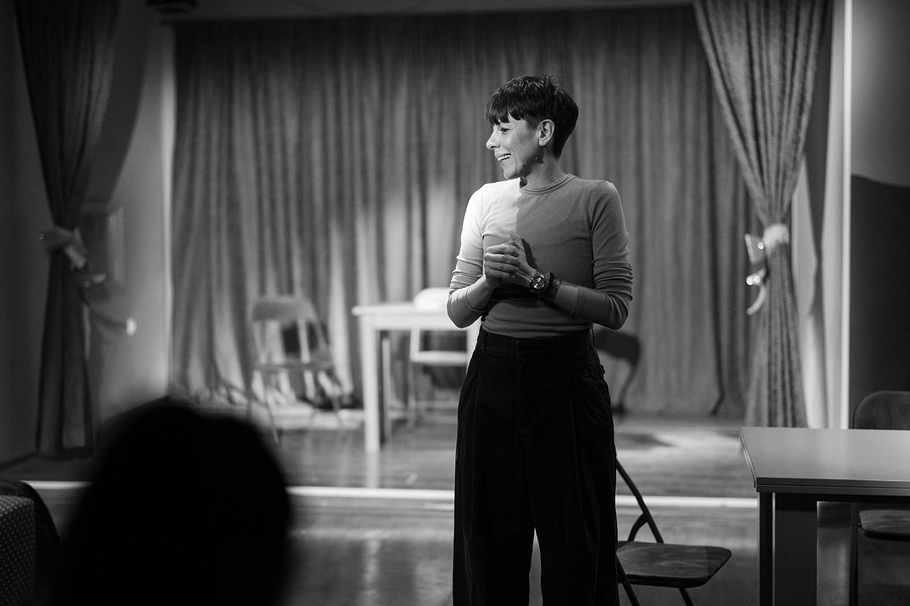
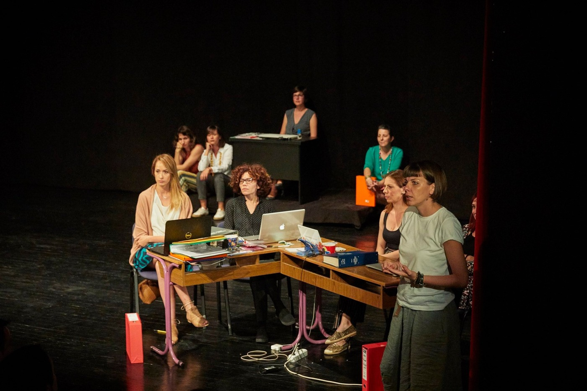
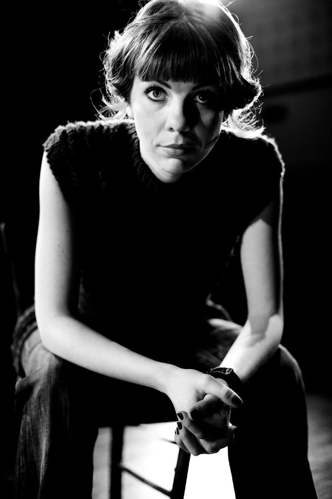

Gluma
Istraživanje izraza, emocija, scene i karaktera.
Škola kreativnosti, javnog nastupa i glume za odrasle
Kreativnost ne pripada samo profesionalnim umetnicima, ona je danas možda najcenjenija sposobnost svakog čoveka u bilo kojoj sferi. I zato, ne zaboravite da se igrate!

O školi
LunArt je nastao iz ideje da odrasli imaju prostor za igru, kreativnost, izražavanje i lični razvoj kroz pozorište.
Školu je osnovala glumica i dramska pedagoškinja Sonja Leštar. LunArt postoji od 2017. godine i okuplja ljude različitih profesija i životnih iskustava koje povezuje želja da istražuju sebe, razvijaju kreativnost i stiču sigurnost u javnom nastupu.
Kroz radionice, vežbe, improvizaciju i rad na predstavama, polaznici imaju priliku da se oslobode treme, razvijaju samopouzdanje, bolje komuniciraju i otkrivaju potencijale koje možda nisu ni znali da poseduju.
Kako u LunArtu vole da kažu, ovo nije samo škola glume. To je mesto gde se i odrasli igraju.

Radimo na
Istraživanje izraza, emocija, scene i karaktera.
Sigurniji govor, jasnija komunikacija i slobodnije obraćanje pred ljudima.
Pozorište kao prostor za istraživanje društvenih tema i ličnog iskustva.
Spontanost, igra, brza reakcija i oslobađanje od straha da sve mora da bude savršeno.
Podsticanje mašte, igre i stvaralačkog izražavanja.
Predavači

glumica i pozorišna pedagoškinja
Vodi polaznike kroz glumački proces, improvizaciju, javni nastup, scenski izraz i rad sa grupom.
koreograf
Radi sa polaznicima kroz scenski proces, vežbe, igru, partnerski rad i razvoj nastupa.
Kreativnost ne pripada samo profesionalnim umetnicima.
Ona je sposobnost svakog čoveka da misli, oseća, reaguje i igra se na nov način.